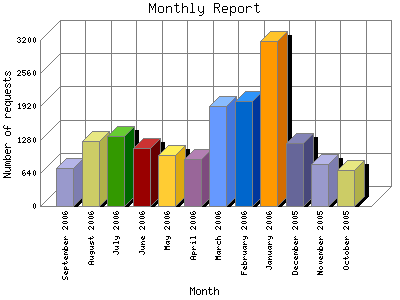

The Monthly Report identifies activity for each month in the report
time frame. Remember that each page hit can result in several server requests
as the images for each page are loaded.
Note: Depending on the
report time frame, the first and last months may not represent a complete
month's worth of data, resulting in lower hits.

| Month | Number of requests | Number of page requests | |
|---|---|---|---|
| 1. | October 2005 | 691 | 99 |
| 2. | November 2005 | 803 | 107 |
| 3. | December 2005 | 1,209 | 199 |
| 4. | January 2006 | 3,172 | 445 |
| 5. | February 2006 | 2,030 | 282 |
| 6. | March 2006 | 1,933 | 299 |
| 7. | April 2006 | 902 | 161 |
| 8. | May 2006 | 976 | 179 |
| 9. | June 2006 | 1,109 | 205 |
| 10. | July 2006 | 1,355 | 218 |
| 11. | August 2006 | 1,249 | 212 |
| 12. | September 2006 | 742 | 137 |
Most active month January 2006 : 445 pages sent.
Monthly average: 195.615384615385 pages sent. 1243.92307692308 requests handled. 140.342 TB bytes served.
This report was generated on September 20, 2006 16:08.
Report time frame October 24, 2005 19:12 to September 19, 2006 18:48.
| Web statistics report produced by: | |
| analog 5.1 | Report Magic for Analog 2.10 |